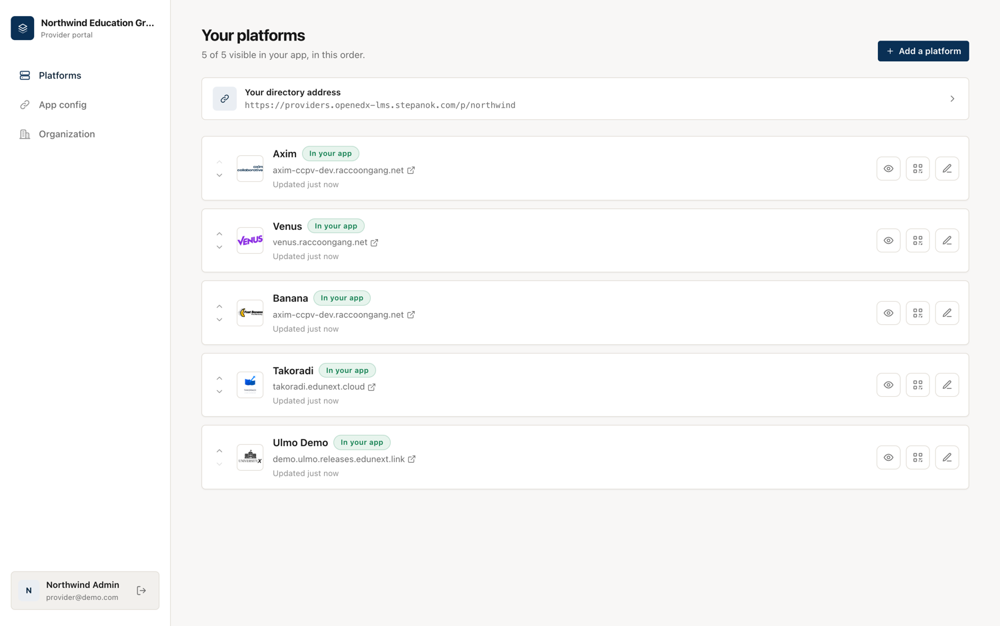
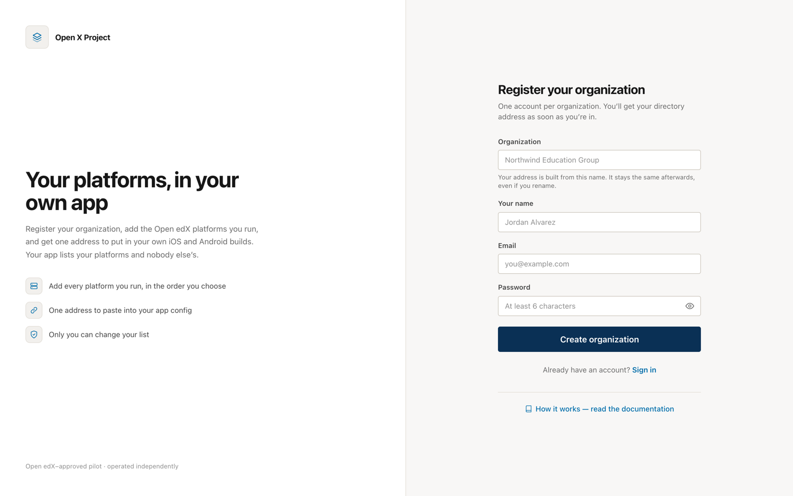
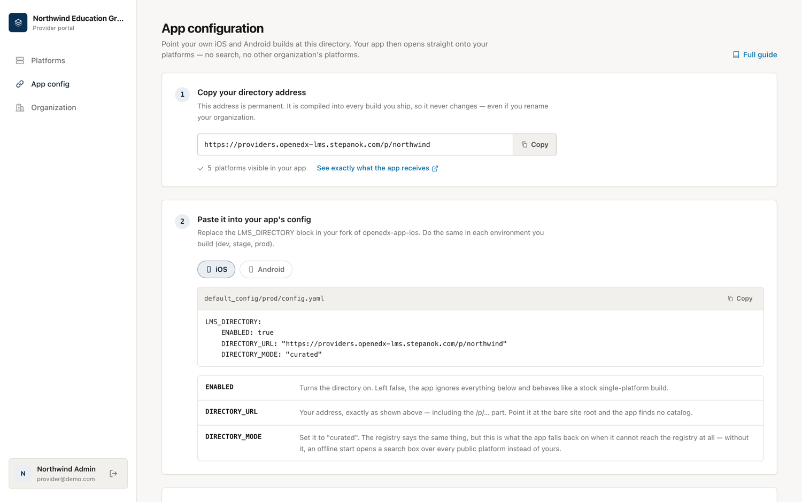
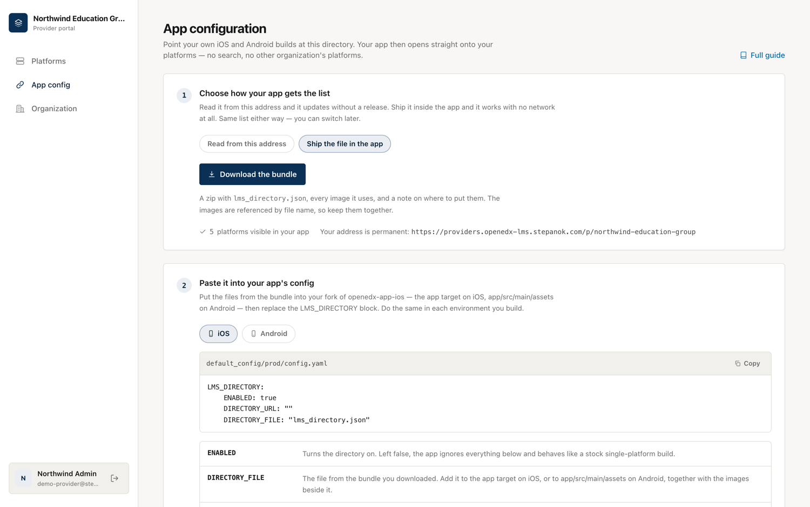
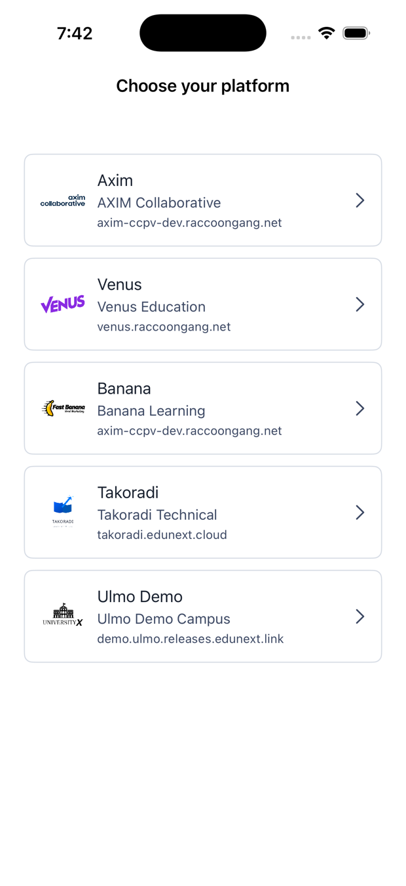
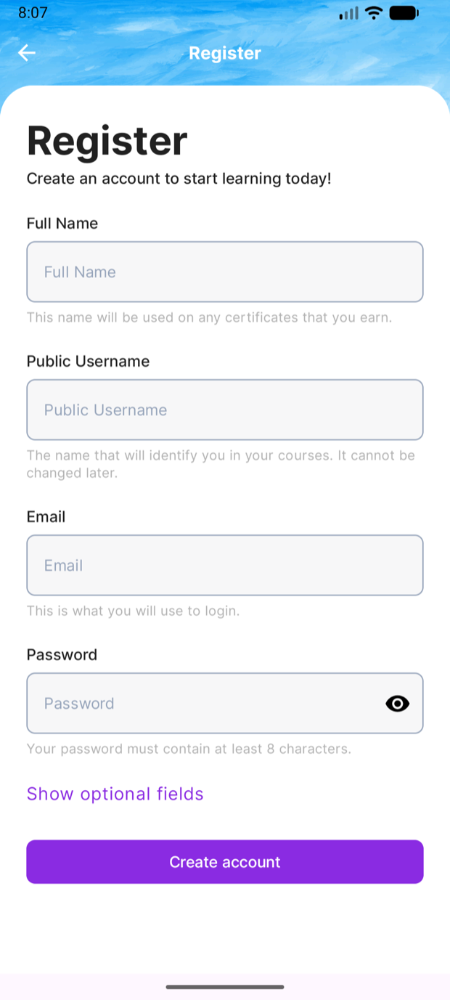
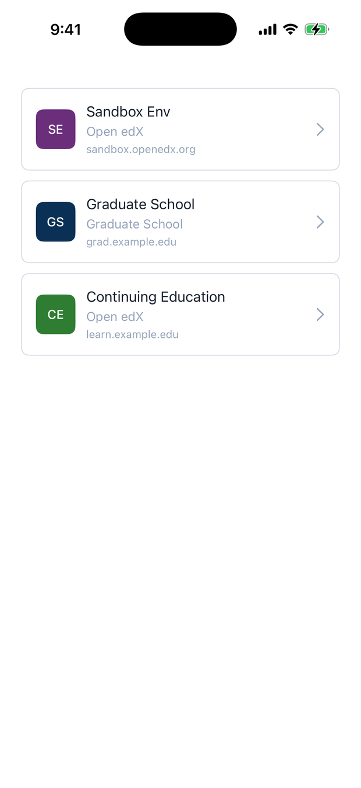
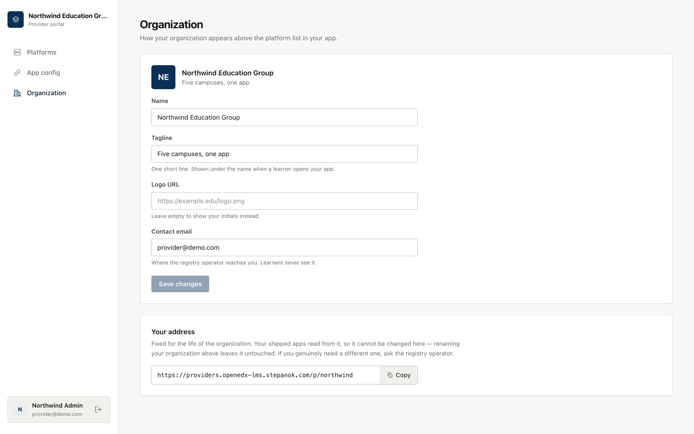
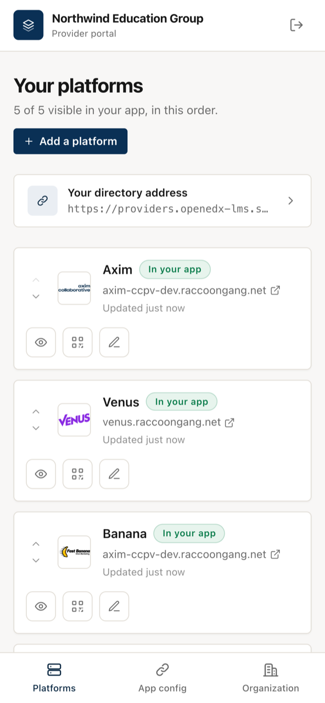
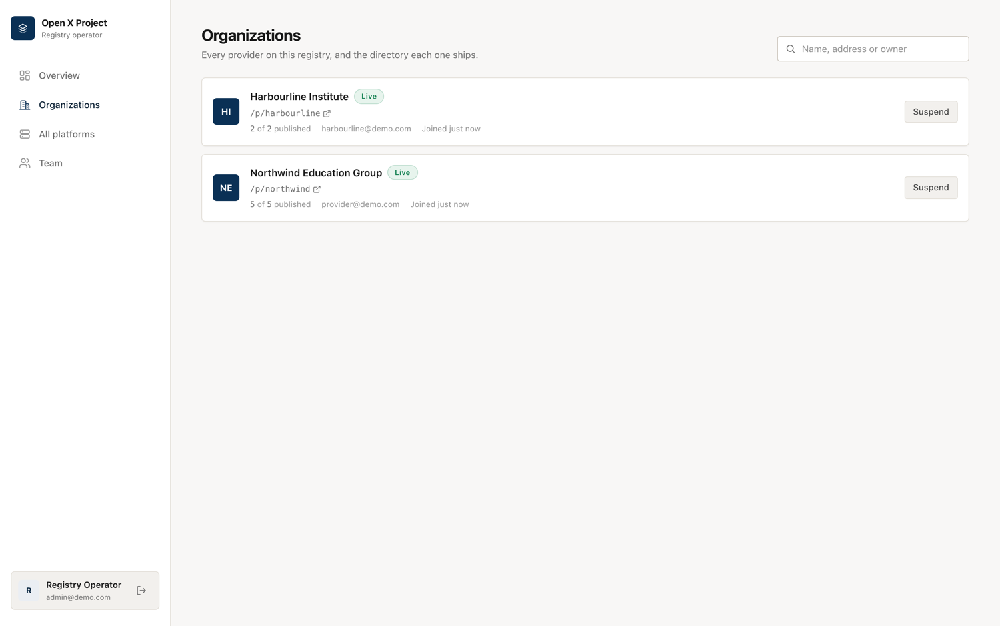

Provider portal¶
You run five Open edX platforms. You want one app, under your own name, that opens onto those five and nothing else — not a public catalog, not somebody else's platforms. You don't want to run a server to get it.
That's the provider portal. One registry, many provider organizations. You sign up, add your platforms, and the portal hands you a permanent address:
You paste that address into your own iOS and Android builds, ship them under your own name, and your learners see your five platforms the moment they open the app.

Which mode is this?
This is the third of three ways to run the registry — see Three ways to run it. If you want to host the registry yourself and it only ever serves your own organization, you want curated mode instead: same result in the app, but the server is yours.
What you get¶
Your own list. Only you can add, hide or reorder platforms in your directory. No other provider on the portal can touch it, and you can't see theirs.
Your own app. The bundle id, the name, the icon, the signing certificate and the Firebase project stay yours. The portal only decides which platforms the app offers.
Per-platform branding. Each platform keeps its own logo, accent colour and sign-in background. A learner picks one and the app re-themes to it.
Changes without a release. Add a platform, hide one, or change the order in the console and installed apps pick it up on their next launch. No App Store review, no Play rollout.
No search box, no reporting. Your learners were handed these platforms by you, so the app doesn't offer to search the wider world and doesn't offer to report them. Both entry points are hidden in the app, and the endpoints behind them are closed on the server.
Set it up¶
1. Register your organization¶
Sign up on the portal. The name you give becomes your permanent address — "Northwind
Education Group" gives you /p/northwind-education-group.

The address is permanent
It gets compiled into every build you ship, so renaming it later would take every installed app offline with no way for you to undo it. Renaming your organization is fine and changes nothing about the address. If you truly need a different one, ask the registry operator before you ship anything.
2. Add your platforms¶
Platforms → Add a platform opens the same wizard LMS owners use: the instance URL, its OAuth client id, branding, and the mobile feature flags. Each platform you add is live in your directory as soon as you save it.
Use the eye button to hide one while you're still setting it up, and the arrows to set the order the app lists them in.
You'll need, per platform:
| What | Where it comes from |
|---|---|
| Instance URL | Your Open edX site, e.g. https://learn.example.edu |
| OAuth client id | Django admin → Django OAuth Toolkit → Applications on that instance |
| Logo and accent colour | Yours — this is what a learner sees in the picker |
Open edX Ulmo or newer is required. Older releases are missing mobile API endpoints the app depends on.
3. Wire it into your apps¶
App config asks the question that decides everything else: should the app read the list from your address, or carry its own copy?
| Read from your address | Ship the file in the app | |
|---|---|---|
| Changing the list | Installed apps pick it up on next launch | Needs a new app release |
| Needs a network | Yes, at launch | No, ever |
| What you copy | One URL | A zip: the file plus every image |
Neither is more correct. A provider who edits their list often wants the first; one shipping into places with poor connectivity wants the second. The list is the same either way, and switching later is a config change.

In your fork of openedx-app-ios or openedx-app-android, edit
default_config/<env>/config.yaml — for every environment you actually build:
LMS_DIRECTORY:
ENABLED: true
DIRECTORY_URL: "https://providers.example.com/p/your-org/directory.json"
DIRECTORY_FILE: ""
| Key | What it does |
|---|---|
ENABLED |
Turns the directory on. Left false, the app ignores the rest and behaves like a stock single-platform build. |
DIRECTORY_URL |
Your address with /directory.json on the end. Point it at the bare site root and the app finds no list. |
DIRECTORY_FILE |
Empty here. Set it and the app reads the file instead, ignoring the address. |
Two keys, and that is the whole config
A document is a fixed list, so the app has no server to ask what mode to be in — and therefore nothing to fall back to. That removes a real trap: with a live service, both apps quietly reverted to open search when they could not reach it, so a branded build starting offline showed every public platform.
3b. Shipping the list inside the app¶
Pick Ship the file in the app and the console hands you a zip:
lms_directory.json your platform list
venus-logo.png … every image it uses
README.txt where to put them

- iOS — drag every file into your app target in Xcode ("Copy items if needed").
- Android — copy every file into
app/src/main/assets/.
Then:


Images hosted elsewhere are left as addresses
The zip packs the images this registry holds. If you pointed a platform at a logo on your own CDN, that address stays in the file and is downloaded at runtime — the registry will not fetch other people's URLs on your behalf. The README in the zip says how many were left and what to do about them.
4. Check it before you ship¶
Open https://providers.example.com/p/your-org/directory.json in a browser —
the See exactly what the app receives link in the console does the same. It
is the exact file your app reads, so what you see here is what it gets:
{
"items": [
{ "id": "1", "title": "Axim", "base_url": "https://axim-ccpv-dev.raccoongang.net", ... },
{ "id": "2", "title": "Venus", "base_url": "https://venus.raccoongang.net", ... }
]
}
If you get 404 Unknown directory, the address is wrong or your organization is
suspended. If you get "This is a provider portal…", you dropped the /p/… part.
What a learner sees¶
The app opens straight onto your platform list — no search, no intro screen. A learner taps one and the app re-themes to it and signs them in against it.

/p/… directory — the app cannot tell the two apart, which is why it needs no code change.Your organization's details¶
Organization sets the name, tagline and logo the app shows above the platform list, and the contact address the registry operator uses to reach you.

The console works on a phone, so you can hide a platform or check your address without a laptop.

What the registry operator can and can't do¶
Someone runs the portal, and it is worth being precise about what that means.
They can see the list of organizations, how many platforms each has published,
and the owner's email; and they can suspend an organization, which makes its
/p/<slug> return nothing until it is restored. Suspension deletes nothing — the
platforms are kept and the same address comes back on restore.
They can't edit your platforms for you, and there is no route that lets one
provider read or change another's — the console has no such button and the API
answers 404 rather than telling you the other organization exists.

Running a portal yourself¶
Set DIRECTORY_MODE=portal and give the deployment a public URL so the addresses
it hands out are the real ones:
DIRECTORY_MODE=portal
REGISTRY_PUBLIC_URL=https://providers.example.com
SECRET_KEY=<a long random string>
ADMIN_EMAIL=you@example.com
ADMIN_PASSWORD=<set before first boot>
REGISTRY_PUBLIC_URL matters more here than in the other modes: behind a reverse
proxy the request the app sees is plain HTTP on an internal hostname, and the
address a provider is handed ends up inside a shipped binary. Set it, or providers
compile the wrong URL into their apps.
Portal mode expects a fresh database. Rows created before the switch belong to
no organization and are therefore invisible to every /p/<slug> directory — safe,
but not what you want. Run a portal as its own deployment rather than converting a
running catalog. See Configuration & deployment.
Troubleshooting¶
The app shows no platforms. Check that DIRECTORY_URL is the full address
of your document, ending in /directory.json, and that the app build has
ENABLED: true. Pointed at a bare site root, the app finds no list.
The app shows nothing. Nothing is published. Check the platform count in App config; a platform that is hidden, or still pending, isn't served.
404 Unknown directory. The slug is wrong, or the organization is suspended.
An unknown slug and a suspended one answer identically on purpose, so that
nobody can enumerate the providers on a portal — check with the operator.
A trailing space in DIRECTORY_URL. iOS keeps it, encodes it as %20, and
every request 404s. Copy the address from the console rather than retyping it.
A bundled build shows initials instead of logos. The images did not make it
into the app. On iOS they must be in the app target, on Android in
app/src/main/assets/, with the same file names the JSON uses — the zip has them
correct, so the usual cause is copying only the JSON.
A bundled build shows nothing at all. DIRECTORY_FILE does not match the
file name in the app, or the file was added to the project without being added
to the target. Both apps fall back to their stock single-platform behaviour when
the file cannot be read.